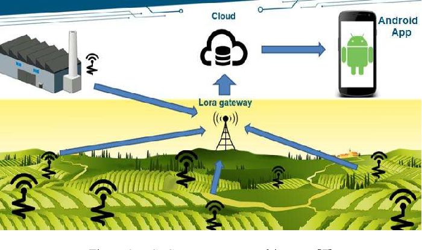

Homepage
Kunal Khurana
Posts
All posts
English
Français
Categories
AI
Bamboo
C
Data Analysis
Digitalization
Git
Irrigation
Machine learning
Matplotlib
Modelling
Numpy
Pandas
Soil Analysis
Yield prediction
data
packages
plot
Recent posts
Order By
Default
Title
Date - Oldest
Date - Newest
Tools - Git-2
Data Analysis
Jun 8, 2023
Tools - Git
Data Analysis
Jun 8, 2023
Tools - Numpy
Data Analysis
Jun 5, 2023
Tools - matplotlib
Data Analysis
Jun 4, 2023
Tools - pandas
Data Analysis
Jun 4, 2023
Quarto Computations
May 22, 2023
Quarto Basics
May 20, 2023
Titanic dataset analysis using Pandas and Numpy
Data Visualization
May 12, 2023
How helpful can AI be in solving the water crisis?
May 9, 2023
Can bamboo help to solve climate crisis?
May 9, 2023
Can AI decide when to water crops?
May 9, 2023
Machine learning in Agriculture
Apr 21, 2023
Irrigation scheduling with Machine learning
Apr 21, 2023

Digitaliztion of Agriculture
Apr 17, 2023
No matching items